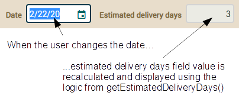

You have made your domain model to
run a web application. This application is already a useful one, but still
there are a lot of refinements that can be made to it. Let's do what's
necessary to convert your application into a better application and, in
this way you shall learn some new interesting things about OpenXava.
We'll start adding business logic to your entities in order to convert
your application into something more than a simple database manager.
Properties
in Java
In order to understand some concepts well in this lesson you have to know
how properties work in Java. The standard way to define a property in Java
is:
// Property
private int quantity; // Has a field
public int getQuantity() { // A getter to return the field value
return quantity;
}
public void setQuantity(int quantity) { // Changes the field value
this.quantity = quantity;
}
This is based on the idea that you never should access the state
(the fields) of an object directly, but always calling methods. This is
very useful because you can change the implementation of a property
without affecting the code that uses it. Moreover, all tools, frameworks
and libraries from the Java ecosystem rely on this convention (part of
JavaBeans specification). Therefore, we should use this convention always.
A property in Java is a getter method (
getQuantity() for example)
and a setter method (
setQuantity(int quantity)) if the property is
modifiable. In fact, the field (
private int quantity in this case)
is not needed.
The problem of this approach is
that it is very verbose, a lot of the code of our classes are getters and
setters that really do not add value and make a lot of noise. To solve
this problem we use a library called Lombok. With Lombok you can define
the above
quantity property in this way:
@Getter @Setter // It generates a getter and a setter method
int quantity;
@Getter and
@Setter generate the getter and the
setter in the compiled code, so when you access the property you have to
use them, thus:
int q = theObject.getQuantity(); // Never int q = theObject.quantity
theObject.setQuantity(q + 10); // Never theObject.quantity = q + 10;
You can declare
@Getter and
@Setter at class level
so all the fields have getter and setter automatically. And of course, you
can write your own setter and getter if you want to use your own logic:
// @Data // NEVER USE @Data
@Getter @Setter
public class Issue {
int number;
String description;
public String getDescription() { // Your own getter overwrites the generated one by Lombok
if (description == null) return "No description yet";
return description;
}
}
In this case Lombok generates for you
getNumber(), setNumber()
and
setDescription() while
getDescription() is the one
written by you. Note as you never should use the
@Data annotation
of Lombok, given that it produces infinite recursive loops when you have
reciprocal references, something very usual in business applications.
Calculated
properties
Perhaps the most simple business logic you can add to your application is
a calculated property. The properties you have used until now are
persistent, i.e., each property is stored in a column in a table in the
database. A calculated property is a property that does not store its
value in the database but it's calculated any time the property is
accessed. See the difference between a persistent and a calculated
property.
// Persistent property
@Getter @Setter // Has getter and setter
int quantity; // Has a field, so it's persistent
// Calculated property
public int getAmount() { // It has no field and no setter, only a getter
return quantity * price; // with a calculation
}
Calculated properties are automatically recognized by OpenXava.
You can use them in views, tabular lists or any other part of your code.
We are going to use calculated properties to add the money element to our
Invoicing application. Because, we have details, products,
quantities. But what about amounts?
Simple
calculated property
The first step will be to add an
amount property to the
Detail.
We want the detail amount to be recalculated and shown to the user when
the user chooses a product and type in the quantity:

Adding this feature to your current code is practically adding a
calculated property to
Detail. Just add the next code to the
Detail
class:
@Stereotype("MONEY")
@Depends("product.number, quantity") // When the user changes product or quantity
public BigDecimal getAmount() { // this property is recalculated and redisplayed
if (product == null || product.getPrice() == null) return BigDecimal.ZERO;
return new BigDecimal(quantity).multiply(product.getPrice());
}
Simply put the calculation in
getAmount() and use
@Depends
to indicate to OpenXava that the
amount property depends on
product.number
and
quantity, thus each time the user changes any of these
values the property will be recalculated. Note as we in this case we use
product
instead of
getProduct() and
quantity instead of
getQuantity()
because from inside the class you can access directly to its fields.
Now you have to add this new property to the
details collection
of
CommercialDocument:
@ElementCollection
@ListProperties("product.number, product.description, quantity, amount") // amount added
Collection<Detail> details;
Nothing else is required. The mere addition of the getter and
modifying the list properties is enough. Try the
Invoice and
Order
modules to see the
amount property in action.
Using
@DefaultValueCalculator
The way we calculated the amount for the detail line is not the best
approach. There are at least two drawbacks to it. Firstly, the user may
want to have the option to overwrite the unit price. Secondly, if the
price of the product changes the amounts for all your invoices changes
too, this is not good.
To avoid these drawbacks it's better to store the price of the product for
each detail. Let's add a
pricePerUnit persistent property to the
Detail class and let's calculate its value from the price in
Product
using a
@DefaultValueCalculator. Just to obtain the effect you
can see:

The logic to calculate the initial value will be in
PricePerUnitCalculator.
It simply reads the price from the product. See the next code for this
calculator:
package com.yourcompany.invoicing.calculators; // In 'calculators' package
import org.openxava.calculators.*;
import com.yourcompany.invoicing.model.*;
import lombok.*;
import static org.openxava.jpa.XPersistence.*; // For using getManager()
public class PricePerUnitCalculator implements ICalculator {
@Getter @Setter
int productNumber; // Contains the product number when calculate() is called
public Object calculate() throws Exception {
Product product = getManager() // getManager() from XPersistence
.find(Product.class, productNumber); // Find the product
return product.getPrice(); // Returns its price
}
}
Then we add the property pricePerUnit.
Add the next code to your Detail class:
@DefaultValueCalculator(
value=PricePerUnitCalculator.class, // This class calculates the initial value
properties=@PropertyValue(
name="productNumber", // The productNumber property of the calculator...
from="product.number") // ...is filled from product.number of the detail
)
@Stereotype("MONEY")
BigDecimal pricePerUnit; // A regular persistent property
In this way when the user chooses a product the price per
unit field is filled with the price of that product but because it's a
persistent property, the user can change it. And if in the future the
price of the product changes this price per unit of the detail will not
change.
This means that you have to adapt your amount calculated property:
@Stereotype("MONEY")
@Depends("pricePerUnit, quantity") // pricePerUnit instead of product.number
public BigDecimal getAmount() {
if (pricePerUnit == null) return BigDecimal.ZERO; // pricePerUnit instead of product and product.getPrice()
return new BigDecimal(quantity).multiply(pricePerUnit); // pricePerUnit instead of product.getPrice()
}
The
getAmount() method uses
pricePerUnit as
source instead of
product.price.
Finally, we have to edit the
CommercialDocument entity and
modify the list of properties to show in the collection to show the new
property:
@ElementCollection
@ListProperties("product.number, product.description, quantity, pricePerUnit, amount") // pricePerUnit added
private Collection<Detail> details;
Try the
Order and
Invoice modules and observe
the new behavior when adding details.
Persistent
properties with @Calculation
Sometimes calculated properties are not the best option. Imagine
that you have a calculated property in
Invoice, let's say
discount:
// DON'T ADD TO YOUR CODE, IT'S JUST TO ILLUSTRATE
public BigDecimal getDiscount() {
return getAmount().multiply(new BigDecimal("0.10"));
}
If you need to process all those invoices with an
discount
greater than 1000, you have to code something like the next code:
// DON'T ADD TO YOUR CODE, IT'S JUST TO ILLUSTRATE
Query query = getManager().createQuery("from Invoice"); // No condition in query
for (Object o: query.getResultList()) { // Iterates over all objects
Invoice i = (Invoice) o;
if (i.getDiscount() // Queries every object
.compareTo(new BigDecimal("1000")) > 0) {
i.doSomething();
}
}
You cannot use a condition in the query to discriminate by
discount,
because
discount is not in the database, it's only in the Java
object, so you have to instantiate every object in order to ask by the
discount.
In some cases this way is a good option, but if you have a really huge
amount of invoices, and only a few of them have the
discount
greater than 1000, then your process will be very inefficient. What
alternative do we have?
Our alternative is to use the
@Calculation annotation.
@Calculation
is an OpenXava annotation that allows to associate a simple calculation
to a persistent property. You can define
discount with
@Calculation
as shown the next code:
// DON'T ADD TO YOUR CODE, IT'S JUST TO ILLUSTRATE
@ReadOnly
@Calculation("amount * 0.10")
BigDecimal discount;
This is a regular persistent property, that is with a
corresponding column in the database, but it has a calculation defined
with
@Calculation. In this case the calculation is
amount *
0.10, so whenever the user changes
amount in the user
interface
discount will be recalculated instantly. The
recalculated value will be saved in the database when user clicks on
Save,
just like in any persistent property. We also have annotated
discount
with
@ReadOnly, so it looks and behaves like a calculated
property, although you can omit
@ReadOnly so the user could
modify the calculated value.
The most useful thing of
@Calculation
properties is that you can use it in conditions, so that you can rewrite
the above process as shown in the next code:
// DON'T ADD TO YOUR CODE, IT'S JUST TO ILLUSTRATE
Query query = getManager().createQuery("from Invoice i where i.discount > :discount"); // Condition allowed
query.setParameter("discount", new BigDecimal(1000));
for (Object o: query.getResultList()) { // Iterates only over selected objects
Invoice i = (Invoice) o;
i.doSomething();
}
In this way we put the weight of selecting the records on the
database server, and not on the Java server. Moreover, the discounts are
not recalculated each time, they are already calculated and saved.
This fact also has effect in the list mode, because the user cannot
filter or order by calculated properties, but he can do so using
persistent properties with
@Calculation:
 @Calculation
@Calculation is a good option when you need filtering and
sorting, and a simple calculation is enough. A shortcoming of
@Calculation
properties is that their values are recalculated only when the user
interact with the record and changes some value of the properties used
in the calculation, therefore when you add a new
@Calculation
property to an entity with existing data you have to update the values
of the new column in the table using SQL. On the other hand if you need
a complex calculation, with loops or consulting other entities, you
still need a calculated property with your Java logic in the getter. In
this last case if you need to sort and filter in list mode for the
calculated property an option is to have both, the calculated and the
persistent property, and synchronize their values using JPA callback
methods (we'll talk about callback methods below).
Total
properties of a collection
We want to add amounts to Order
and Invoice too. To calculate vat, base amount and total amount
are indispensable. To do so you only need to add a few properties to CommercialDocument
class. The next figure shows the user interface for these properties:

Add the next code to
CommercialDocument entity:
@Digits(integer=2, fraction=0) // To indicate its size
BigDecimal vatPercentage;
@ReadOnly
@Stereotype("MONEY")
@Calculation("sum(details.amount) * vatPercentage / 100")
BigDecimal vat;
@ReadOnly
@Stereotype("MONEY")
@Calculation("sum(details.amount) + vat")
BigDecimal totalAmount;
Note how we have chosen @Calculation
+ @ReadOnly persistent properties over calculated ones for vat
and totalAmount, because the calculations are simple, and
filtering and ordering for them is very useful. Also, you can see how in @Calculation
you can use sum(details.amount) to refer to the sum of the column
amount of the collection details, in this way we don't need
to have a baseAmount property. On the other hand, vatPercentage
is a conventional persistent property. In this case we use @Digits
(an annotation from Bean Validation, the validation standard of Java) as
an alternative to @Column to specify its size.
Now that you have written the
amount properties of
CommercialDocument, you must modify the
list of properties of the collection to show
the
total properties of the
CommercialDocument (
Invoice
and
Order). Let's see it:
abstract public class CommercialDocument extends Identifiable {
@ElementCollection
@ListProperties(
"product.number, product.description, quantity, pricePerUnit, " +
"amount+[" +
"commercialDocument.vatPercentage," +
"commercialDocument.vat," +
"commercialDocument.totalAmount" +
"]"
)
private Collection<Detail> details;
...
}
Total properties are regular properties of the entity (
CommercialDocument
in this case) that are placed in the user interface below the column of a
collection. For that, in
@ListProperties you use square brackets
after the property to enumerate them, like
amount[commercialDocument.totalAmount].
Moreover, if you want just the summation of the column you don't need a
property for that, with a + after the property in
@ListProperties
is enough, like
amount+. In our case we combine both things, + and
total properties between [ ].
Now you can try your application.
It would behave almost as in figure at the begin of this section. “Almost”
because
vatPercentage does not have a default value yet. We add it
in the next section.
Default
value from a properties file
It's useful for the user to have the default value populated for the
vatPercentage.
You could use calculator (with
@DefaultValueCalculator) that
returns a fixed value, but in that case changing the default value means
changing your source code. Otherwise you could read the default value from
the database (using JPA from your calculator), but in that case changing
the default value means updating a database table.
Another option is to store this configuration value in a properties file,
a plain file with key=value pairs. In this case changing the default value
for
vatPercentage is just a matter of editing a plain file with
a text editor.
Let's implement the properties file option. Create a file named
invoicing.properties
in the
Invoicing/properties folder with the next content:
defaultVatPercentage=21
Though you can use the
java.util.Properties class from
Java to read this file we prefer to create a custom class to read these
properties. We are going to call this class
InvoicingPreferences
and we'll put it in a new package named
com.yourcompany.invoicing.util.
You have the code here:
package com.yourcompany.invoicing.util; // in 'util' package
import java.io.*;
import java.math.*;
import java.util.*;
import org.apache.commons.logging.*;
import org.openxava.util.*;
public class InvoicingPreferences {
private final static String FILE_PROPERTIES="invoicing.properties";
private static Log log = LogFactory.getLog(InvoicingPreferences.class);
private static Properties properties; // We store the properties here
private static Properties getProperties() {
if (properties == null) { // We use lazy initialization
PropertiesReader reader = // PropertiesReader is a utility class from OpenXava
new PropertiesReader( InvoicingPreferences.class, FILE_PROPERTIES);
try {
properties = reader.get();
}
catch (IOException ex) {
log.error( XavaResources.getString( // To read a i18n message
"properties_file_error", FILE_PROPERTIES), ex);
properties = new Properties();
}
}
return properties;
}
public static BigDecimal getDefaultVatPercentage() { // The only public method
return new BigDecimal(getProperties().getProperty("defaultVatPercentage"));
}
}
As you can see
InvoicingPreferences is a class with one
static method,
getDefaultVatPercentage(). The advantage of using
this utility class over reading directly the properties file is that if
you change the way the preferences are obtained, for example reading from
a database or an LDAP directory, you only have to change this class in
your entire application.
You can use this class from the default calculator for the
vatPercentage
property. See the calculator in the next code:
package com.yourcompany.invoicing.calculators; // In 'calculators' package
import org.openxava.calculators.*; // To use ICalculator
import com.yourcompany.invoicing.util.*; // To use InvoicingPreferences
public class VatPercentageCalculator implements ICalculator {
public Object calculate() throws Exception {
return InvoicingPreferences.getDefaultVatPercentage();
}
}
As you see, it just returns the
defaultVatPercentage
from
InvoicingPreferences. Now, you can use this calculator in
the definition of
vatPercentage property in
CommercialDocument:
@DefaultValueCalculator(VatPercentageCalculator.class)
BigDecimal vatPercentage;
With this code when the user clicks to create a new invoice, the
vatPercentage
field will be filled with 21 or whatever other value you put in
invoicing.properties.
Manual
schema evolution
When you use things like
@Calculation or
@DefaultValueCalculator
the automatic evolution schema provides by OpenXava falls short, because
it adds a new column when you add a new property, but it does not fill the
column with the correct values. In this case we have added several
persistent properties with
@Calculation whose values are not
recalculated until the user interact with the record. Moreover, we have a
default value for
vatPercentage that only has effect when the user
creates a new record but not on the existing records. We have to fill the
new columns with reasonable values.
Given that we're in early
development stage just removing all the records would be a good enough
solution, but for sure that is not a good idea in production, so we're
going to adjust our database to new code without lose data to illustrate
manual evolution schema.
The easier way is to use the
application itself to do the updates. We're going to do it for updating
the product prices. In order our new calculated properties work nicely all
the products should have price, so go to the Product module with
your browser and make sure that all products have price:

If some product has no price edit
it and enter a price.
The next changes are not so
simple, therefore we're going to execute SQL statements against our
database. To execute these SQL statements, first make sure your
application is running, then use the menu option
OpenXava >
Database Manager of OpenXava Studio:

Now you are ready to write and execute SQLs.First, we set value for
pricePerUnit
column in all details:
UPDATE INVOICING.COMMERCIALDOCUMENT_DETAILS
SET PRICEPERUNIT = (
SELECT PRICE FROM INVOICING.PRODUCT
WHERE NUMBER = PRODUCT_NUMBER
)
Then we update the vatPercentage
for all invoices:
UPDATE INVOICING.COMMERCIALDOCUMENT
SET VATPERCENTAGE = 21
Next, the updating of vat:
UPDATE INVOICING.COMMERCIALDOCUMENT
SET VAT = (
SELECT SUM(PRICEPERUNIT * QUANTITY) * 0.21
FROM INVOICING.COMMERCIALDOCUMENT_DETAILS D
WHERE D.COMMERCIALDOCUMENT_OID = COMMERCIALDOCUMENT.OID
)
Finally, we update the totalAmount
of all invoices:
UPDATE INVOICING.COMMERCIALDOCUMENT
SET TOTALAMOUNT = (
SELECT SUM(PRICEPERUNIT * QUANTITY) * 1.21
FROM INVOICING.COMMERCIALDOCUMENT_DETAILS D
WHERE D.COMMERCIALDOCUMENT_OID = COMMERCIALDOCUMENT.OID
)
Beware, the above sentences work
nicely with HSQLDB, the database included with OpenXava. If you're using
another database probably you have to adapt the syntax. After executing
the above sentences you can try your application. It would behave as in
figure at the begin of the section "Total properties of a collection" even
for already existing invoices and orders.
JPA
callback methods
Another useful way to add business logic to your model is using JPA
callback methods. A callback method is a method in your entity that is
called in some specific moment of its life cycle as a persistent object.
That is, you can specify some logic to execute on save, read, remove or
modification of the entity.
In this section we'll see some practical applications of JPA callback
methods.
Multiuser
safe default value calculation
Until now we were calculating the
Invoice and
Order
number using
@DefaultValueCalculator. This calculates the
default value when the user clicks to create a new
Invoice or
Order.
So, if several users click on the
New button at the same time all
of them get the same number. This is not multiuser safe. The way to
generate a unique number is by generating it just on save.
We are going to implement it using a JPA callback method. JPA allows you
to mark any method of your class to be executed in any part of its life
cycle. We'll indicate the calculation of the number just before the saving
of the
CommercialDocument. Using this approach we'll improve the
number calculation for having a different numeration for
Order
and
Invoice.
Edit the
CommercialDocument entity and add the
calculateNumber()
method:
@PrePersist // Executed just before saving the object for the first time
private void calculateNumber() throws Exception {
Query query = XPersistence.getManager()
.createQuery("select max(i.number) from " +
getClass().getSimpleName() + // Thus it's valid for both Invoice and Order
" i where i.year = :year");
query.setParameter("year", year);
Integer lastNumber = (Integer) query.getSingleResult();
this.number = lastNumber == null ? 1 : lastNumber + 1;
}
This code is the same as that of
the
NextNumberForYearCalculator but using
getClass().getSimpleName()
instead of “CommercialDocument”. The
getSimpleName() method
returns the name of the class without the package, i.e., just the entity
name. It will be “Order” for
Order and “Invoice” for
Invoice.
Thus we can get a different numeration for
Order and
Invoice.
JPA specification states that you should not use JPA API inside a JPA
callback method. So the above method is not legal from a strict JPA
viewpoint. But, Hibernate (the JPA implementation OpenXava uses by
default) allows you to use it in
@PrePersist. And since JPA is
the easier way to do this calculation we use it in our practice.
Now you can delete the
NextNumberForYearCalculator class from
your project, and modify the number property of
CommercialDocument
to avoid using it:
@Column(length=6)
// @DefaultValueCalculator(value=NextNumberForYearCalculator.class, // Remove this
// properties=@PropertyValue(name="year")
// )
@ReadOnly // The user cannot modify the value
int number;
Note that in addition to removing
@DefaultValueCalculator,
we have added the
@ReadOnly annotation. This means that the user
cannot enter or modify the
number. This is the right approach
given that the number is generated on saving the object, so the user typed
value would always be overridden.
Try now the
Invoice or
Order
module and you will see that the number is empty and not editable, and
when you save the document the number is calculated and a message is shown
with the year and the just generated number for that invoice/order.
Synchronizing
persistent and calculated properties
As we already have learned, calculated properties do not allow to filter
or ordering in list, so we prefer transient properties with
@Calculation.
However,
@Calculation properties are only valid for simple
arithmetic calculations. When you need loops, condition, read from
database, connect to external services, or some complex logic,
@Calculation
is not enough. For these cases you need to write the logic with Java, in
the getter. But, how we can do this and at the same time keep the ordering
and filtering in list? Simple, you can use two properties, one calculated
and one persistent, and synchronize both using JPA callback methods.
You're going to learn how to do it in this section.
Let's add a new property to Order
entity called estimatedDeliveryDays:
@Depends("date")
public int getEstimatedDeliveryDays() {
if (getDate().getDayOfYear() < 15) {
return 20 - getDate().getDayOfYear();
}
if (getDate().getDayOfWeek() == DayOfWeek.SUNDAY) return 2;
if (getDate().getDayOfWeek() == DayOfWeek.SATURDAY) return 3;
return 1;
}
This is a pure calculated
property, a getter with Java logic. It calculates the estimated delivery
days using date as source. This case cannot be solved with @Calculation
that only supports basic arithmetic calculations.
We also have to add estimatedDeliveryDays
to the default @View declaration in Order code:
@View(extendsView="super.DEFAULT",
members=
"estimatedDeliveryDays," + // ADD THIS LINE
"invoice { invoice }"
)
...
public class Order extends CommercialDocument {
The result is this:

The value is recalculated each
time the date changes in the user interface thanks to the @Depends("date")
in estimatedDeliveryDays. This is all very nice, but when you go
to list mode you cannot order or filter by estimated delivery days. To
solve this problem we add a second property, this time a persistent one.
Add the next code to your Order entity:
@Column(columnDefinition="INTEGER DEFAULT 1")
int deliveryDays;
Note as we have used @Column(columnDefinition="INTEGER
DEFAULT 1"), with this trick when OpenXava creates the column uses
"INTEGER DEFAULT 1" as column definition, thus the new column has 1 as
default value instead of null, and we avoid an ugly error with our int
property. Yes, in many cases @Column(columnDefinition=) is an
alternative to do an UPDATE over the table (as we did in "Manual schema
evolution" section), although has the problem that is database dependent.
Anyways, this columnDefinition dissertation is tangential to our
calculated/persistent synchronization issue, @Column is not
required at all, it's just convenient for this int property.
This new deliveryDays
property will contain the same value as estimatedDeliveryDays,
but deliveryDays will be persistent with its
corresponding column in the database. The tricky issue here is to have the
deliveryDays property synchronized. We will use the JPA callback
methods in Order to achieve this. It's enough to assign the
value of estimatedDeliveryDays to deliveryDays each time
that a new Order is created (@PrePersist) or updated (@PreUpdate).
Add a new
recalculateDeliveryDays()
method to
Order entity annotated with
@PrePersist and
@PreUpdate,
thus:
@PrePersist @PreUpdate
private void recalculateDeliveryDays() {
setDeliveryDays(getEstimatedDeliveryDays());
}
Basically, the
recalculateDeliveryDays() method is called
every time an
Order entity is registered in the database for the
first time and when the order is updated.
You can try the
Order
module with this code, and you will see how when a order is created or
modified, the column in the database for
deliveryDays is
correctly updated after saving, ready to be used in massive processing and
available for ordering and filter in list.
Database
logic (@Formula)
Another alternative to
@Calculation or having
calculated/persistent properties synchronized is the
@Formula
annotation.
@Formula is a Hibernate extension to the JPA
standard, that allows you to map a property to a SQL statement. For
example, you can define
estimatedProfit with
@Formula
in
CommercialDocument as shown the next code:
@org.hibernate.annotations.Formula("TOTALAMOUNT * 0.10") // The calculation using SQL
@Setter(AccessLevel.NONE) // The setter is not generated, only the getter is needed
@Stereotype("MONEY")
BigDecimal estimatedProfit; // A field, as in the persistent property case
This means that when a
CommercialDocument is read from
the database, the
estimatedProfit field will be filled with the
calculation for
@Formula that is done by the database. The user
can filter and ordering by
@Formula properties in list mode, but
they are always read only and are not recalculated in real time in detail
mode. Given they are read only they don't need the setter method, so we
use
@Setter(AccessLevel.NONE) to prevent the setter generation by
Lombok. Moreover,
@Formula properties are database dependent,
because you can use syntax only supported by certain database vendor.
Summary
In this lesson you have learned some common ways to add business logic to
your entities. There should be no doubt about the utility of calculated
properties,
@Calculation, callback methods or
@Formula.
Nevertheless, there are many other ways to add logic to your OpenXava
application, and we are going to learn them.
In the coming lessons you'll see how to add validation, modify the
standard module behavior and add your own business logic, among other ways
to add custom logic to your application.
Download source code of this lesson
Any problem with this lesson? Ask in the forum Everything fine?
Go to Lesson 10